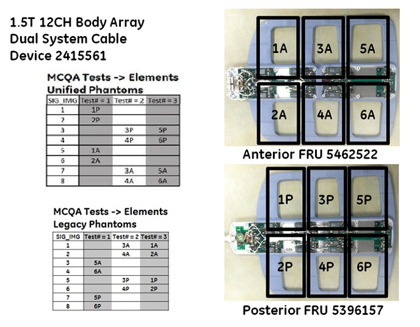
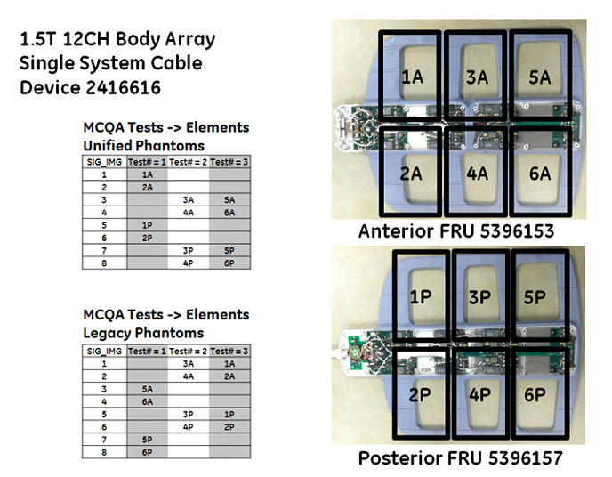
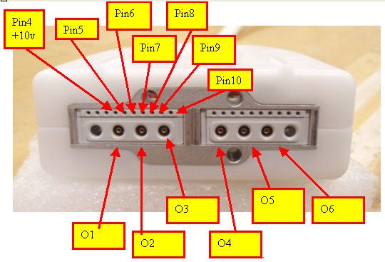

- 00000018WIA30611F20GYZ
- id_131060846.4
- Jun 23, 2025 8:33:54 AM
1.5T 12-Channel Body Array Coil Troubleshooting
Preliminary Requirements
| Personnel requirements | |||
|---|---|---|---|
| Required persons | Preliminary requirements | Procedure | Finalization |
| 1 | - | 30 minutes | - |
| Tools and test equipment | |||
|---|---|---|---|
| Item | Quantity | Part number | Manufacturer |
| Voltmeter | 1 | - | - |
| (For Unified phantom set) TL Unified Phantom (for 1.5T) | 2 | 5343347 | - |
| Replacement parts | |||
|---|---|---|---|
| Item | Quantity | Part number | Manufacturer |
| Some tests may require 1.5T 12-Channel Body Array Coil FRUs as listed in this section for diagnosis. | - | - | - |
| Required conditions |
|---|
The 1.5T 12-Channel Body Array Coil must be installed on the HDx, HDxt, MR450, or MR450w system.
|
Overview
The following tips can be used to troubleshoot common problems with the 12-Channel Body Array Coil for the MR450/MR450w P-connector and the single and dual connector coil for the HDx or HDxt system.
Note Legacy coils are shipped with coil-specific phantoms and positioner. New coils do not ship with phantoms. Phantoms and positioner come in a unified phantom set with the MR system.
Troubleshooting
Receiving No Signal
- Problem
- Unable to prescan, or scanning but receiving no signal.
- Possible Solution
-
- Verify that the port used to plug in the coil has a green light illuminated or a green lock indicated (port P1, P2 or P3, P4). This indicates the coil is properly plugged into the system.
- Verify that the system has correctly detected the coil by checking in the “Currently Connected” window in the GUI to select coils in Rx as shown below.
Figure 1. Currently Selected Coils Window on the Scan Screen 
- Verify that the scan locations and any FOV offsets are correct.
- Perform a continuity check on the output cable. This must be performed by a GE-authorized Service Engineer.
- Verify that the coil is positioned with the cable exiting toward the bore.
- Verify that the cable is not looped or crossed.
A problem can also exist at the system interface port. Try swapping both the connectors in the A and B ports. If still unable to get a signal, try to scan (transmit and receive) with the body coil. For this test, be sure to remove the imaging coil from the magnet bore before scanning with the body coil.- If still receiving no signal, the problem probably lies with the MR system.
- If the scan completes successfully, there could be a problem with the coil. Contact GE for further assistance. If unable to scan with the substitute coil, there may be a system problem related to this particular coil type.
Image Quality
- Problem
- Poor image quality, shaded images, or MCQA fails.
- Possible Solution
-
- Perform a continuity check on the output cable. This must be performed by a GE-authorized Service Engineer.
- Verify that there are no loops in the cables.
- Verify that there are no metal or ferromagnetic objects close to the coil, patient or magnet (such as a safety pin or hair pin).
- Verify that the coil is properly positioned.
- Verify that the center frequency is within the frequency adjustment range for the system.
- Verify that the R1, R2 and TG values from the prescan are within normally expected ranges.
If not already done, perform the coil MCQA Test. If the values obtained do not fall within normal operating parameters, investigate further by performing a phantom scan with the body coil. For this test, be sure to remove the imaging coil from the magnet bore before scanning with the body coil. If the problem persists, there could be an MR system problem.
- If the body coil scan is satisfactory, acquire a scan using another coil of the same type (receive-only, phased array).
- If the image quality is visibly improved, there may be a problem with the coil. Contact GE for further assistance.
Coil Mapping Information


Example Results of MCQA on 1.5T 8-Channel Body Array Coil
- Example

- In this example, Test 1, Image 2 fails SNR.
- This image 2 corresponds to the anterior element 6A.
- Test 2 passes all images, however, does not test element 6A.
- Test 3, Image 2 passes, but now it is testing anterior element 2A.
- Conclusion
- Receive chain from coil to recon is good; however, element 6A on the anterior part of the coil is bad. Replace the anterior FRU.To view signal images, use Image Display in a 3 × 3 matrix. This will show each of the intermediate images (1 through 8), plus the composite image as image 9.
- Images from coil elements being tested should have significant higher W/L values than images from elements not being tested.
- Images from coil elements being tested, but that have significantly lower W/L values, would be considered failing.
Figure 2. MCQA Test 1 Results 
Figure 3. MCQA Test 2 Results 
Figure 4. MCQA Test 3 Results 
Artifacts
- Problem
- Black line or signal void on the image.
- Possible Solution
- Verify there is no metal present in the area being scanned in or on the patient.
Output Cable Check
Visual Check
Before removing the cable assembly from the coil, visually inspect all coaxial connectors and pins on the coil connector. The figure below shows the pin layout of the single coil connector for an HDx or HDxt system. If there are any broken, deformed or recessed pins or coaxial connectors, replace the cable assembly.
| Notice | |
|---|---|
Note There are two connectors in the dual connector coils.

Check for Continuity in RF Cables from System Connector to Anterior Connector and System Connector to Posterior (for Coil with P-Connector)
- Remove the cable assembly from the posterior and unplug the P-connector from the anterior. Refer to Cable Replacement.
- Use a DVM to ensure an open circuit condition exists between the system connector and posterior coil-side RF cables. Similarly, ensure an open-circuit condition between the system connector and the anterior P-Connector.
Figure 6. Coil-Side RF Cables for Posterior Section 
Table 1. Hypertronics/P-Connector Single Connector RF Allocation for Posterior P-Connector Hypertronics Connector SMB Connectors from Cable Trap-Coaxial Cable Color R9 G1 Clear coax R10 G2 Brown coax R11 G3 Red coax R12 G4 Orange coax R13 H1 Yellow coax R14 H2 Black coax Figure 7. Anterior P-Connector RF Allocation 
Table 2. Hypertronics/P-Connector Single Connector RF Allocation for Anterior P-Connector Hypertronics Connector P-Connector (RF from Left to Right) R1 C1 O6 R2 C2 O1 R3 C3 O4 R4 C4 O3 R5 D1 O5 R6 D2 O2 Figure 8. Pin Layout of P-Connector 
- If the test fails, perform Cable Replacement.
- Check for continuity in DC cables from the system connector to anterior connector and system connector to posterior.
- Measure the open circuit condition P-connector and P-connector DC pins or between Hypertronics connector and P-connector DC pins.
Table 3. Hypertronics/P-Connector Single Connector DC Allocation for Anterior P-Connector Hypertronics Connector P-Connector DC Pins R1 C1 Pin 10 R2 C2 Pin 5 R3 C3 Pin 9 R4 C4 Pin 6 R5 D1 Pin 8 R6 D2 Pin 7 - If the test fails, perform Cable Replacement.
- Measure the open circuit condition between P-connector and 8-pin header or between Hypertronics connector and 8-pin header.
Table 4. Hypertronics/P-Connector Single Connector DC Allocation for Posterior P-Connector Hypertronics Connector Posterior Trap 8-pin Header DC Wire Colors R9 G1 Brown/white R10 G2 Orange R11 G3 Yellow R12 G4 Green R13 H1 Blue R14 H2 Violet - If the test fails, replace the cable.
Check for Resistance in DC Cables from System Connector to Anterior Connector and System Connector to Posterior
- Measure resistance using a DVM between the system connector pins and P-connector DC pins. See the table below, columns 3 and 4.
- Measure resistance between the system connector DC pins and posterior 8-pin header. See the table below, columns 1 and 2. The resistance between the pins should be ≤2.7Ω.
- If the resistance measured does not pass specification, perform Cable Replacement.
| DC Resistance from Hypertronics System Connector to Posterior Trap Wires (≤2.7Ω) | DC Resistance from Hypertronics System Connector to Anterior P-Connector (≤2.7Ω) | DC Resistance from P-Connector to Posterior Trap Wires (≤2.7Ω) | DC Resistance from P-Connector to Anterior P-Connector (≤2.7Ω) |
|---|---|---|---|
| G1 to brown wire | C1 to pin 10 | R9 to brown wire | R1 to pin 10 |
| G2 to orange wire | C2 to pin 5 | R10 to orange wire | R2 to pin 5 |
| G3 to yellow wire | C3 to pin 9 | R11 to yellow wire | R3 to pin 9 |
| G4 to green wire | C4 to pin 6 | R12 to green wire | R4 to pin 6 |
| H1 to blue wire | D1 to pin 8 | R13 to blue wire | R5 to pin 8 |
| H2 to violet wire | D2 to pin 7 | R14 to violet wire | R6 to pin 7 |